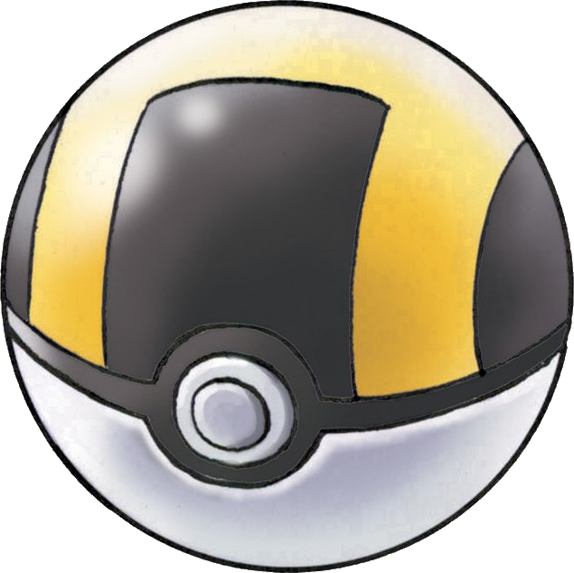

How to use your pokeballs wisely
So there are multiple factors deciding on your catch rate chances. The main factor is the hp
of the pokemon, and the bar goes from green to yellow to red. When it is at red, this is when your
chances are most optimal. However, this is not all that is needed to increase your chances. You
also cause status effects, and most importantly the sleep, burn or poison status effect. Sleep is
probably the most effective status effect because it only makes the pokemon sleep for a few turns,
while poison and burn chops down on the health and gradualy makes the pokemon faint so that you
have to start over again. If you are to encounter a pokemon in the grass, this might not be such
a bad idea because you can just try to encounter it once again, but with legendary pokemon
this becomes trickier. Because the chances are increased when the health of the pokemon is low,
and with the status effect, it is better to make a legendary pokemon sleep to get the ultimate
chance of capture. If you accidently defeat the legendary pokemon with poison, you will have to
restart your game and start over with the battle, instead of just making it sleep so that you don't
have to chip down the health of the pokemon again.
Here is an example of how you want the battle to look to idealy catch a pokemon.
Here you see exacly what the result should look like when you are to catch a pokemon. As long
as you have a pokemon with you that can make the other pokemon sleep, you should be fine.
One tip is to always have a lot of revives on you, which is an item that, as the name says, revives
your pokemon after it has been defeated. You can continue to revive them and make the pokemon sleep
until it is caught. The best ball to use is usually the ultra ball, but if you've used many turns,
it can also be a good idea to use a timer ball. This ball increases your chances by each turn you
have battled the pokemon.
The main pokeballs
This is a Pokéball, the most common one that you get. At the start of the game, you will recieve
five of these balls to capture your first Pokémon. They will usually be available to you after
completing the first small step of the game after defeating your rival for the first time and
complete the catch tutorial. You can buy them at the Poké mart, which is the Pokémon stores you will find around the game.
They can be bought for 200 credits, which is the currency in the Pokémon games, and if you buy
10 of them at the same time, you will recieve a free Premier Ball with your purchase. It is just
like a Pokéball but the design is different.
This is a Greatball, and it has an increased catch rate of 1.5 times greater than the
original Pokéball. You can find it on the ground, but it will also be available to you
in the Poké Mart for 600 credits after you have defeated an amount of gyms.

This is a Ultraball, and it has an increased catch rate of 2.0 times greater than the
original Pokéball and also a 1.33 times greater catch rate than the Greatball. As with the
Pokéball and Greatball, this one is also possible to find on the ground and it will be
unlocked in the Poké Mart for 1200 credits after you defeat an amount of gyms. This is usually
the ball you use for the complete game. with an exception of the Dusk Ball or the Net Ball depending
on your area. The Dusk ball is more effective in caves or other dark places while the Net ball is more
effective at sea. There also exists other balls that makes the pokemon more friendly if you catch it, and
and others who can heal the caught pokemon to full so that you don't have to visit the Poké Center.
These along with a lot of other balls will also be available to you after you defeat an amount
of gyms.

This is a Master ball, which is the most powerful ball of them all. It is a one in every game
kind of ball, and it has a 100% catch rate against any Pokémon. It is usually available to you
after defeating 7 gyms so that you can use it to catch the main Legendary pokemon, but you
have the choice to use it on whatever you want. It is recommended that you use it on pokemon
that can flee from you in battle, and there's usually a few of those in every pokemon game roaming
around the map.
 Pokéballs
Pokéballs